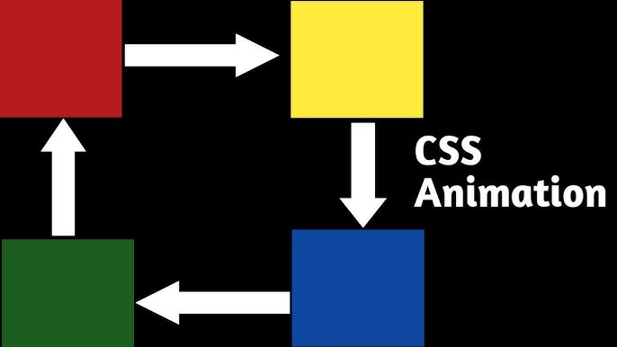
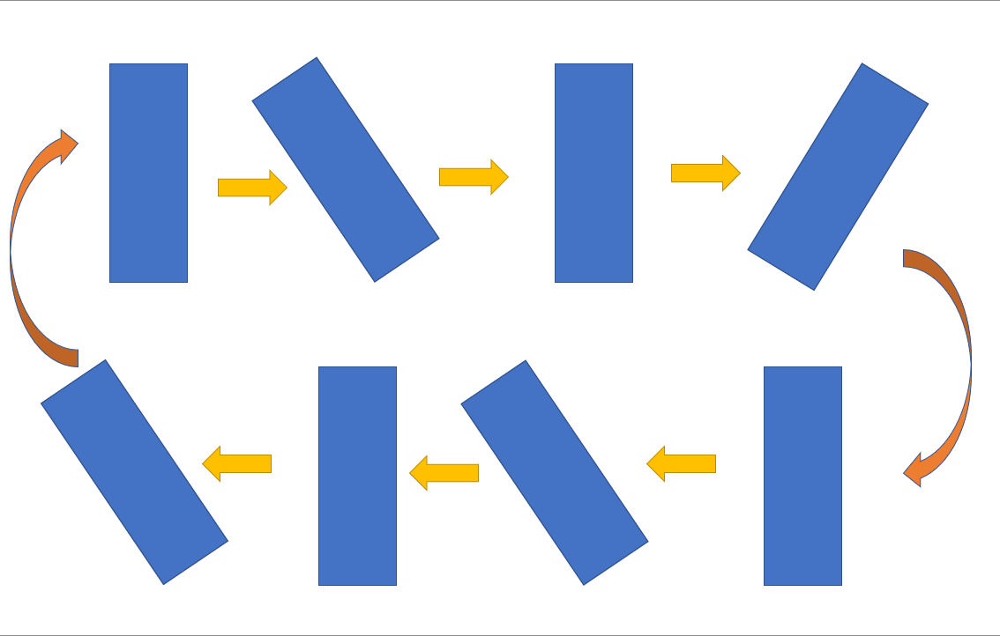

CSS Transforms, Transitions, and Animations

scale(): Changes the size of an element. Example: transform: scale(1.2);.
rotate(): Rotates an element by a specified degree. Example: transform: rotate(45deg);.
translate(): Moves an element along the X or Y axis. Example: transform: translateX(100px);.
transition: Used to animate changes to a property over time. By applying transition, you can make property changes (like color or position) smooth. Example:
Performance: Stick to animating properties like opacity, transform, and filter for better performance, as these don’t cause layout reflows.
Subtlety: Keep animations subtle and avoid excessive or distracting motion.
Consistency: Use similar timing and easing functions (ease-in-out, linear) across animations for a smooth, cohesive experience. CSS animations can make websites more interactive and engaging when used thoughtfully.
CSS allows for smooth, visually engaging interactions using transforms, transitions, and animations. These tools help create dynamic websites that respond to user actions or automatically change over time. Below are key concepts and best practices for working with CSS animations.
Using CSS Transforms and Transitions
1. transform: This property enables elements to be scaled, rotated, skewed, or moved without changing the document flow. Common transformations include:scale(): Changes the size of an element. Example: transform: scale(1.2);.
rotate(): Rotates an element by a specified degree. Example: transform: rotate(45deg);.
translate(): Moves an element along the X or Y axis. Example: transform: translateX(100px);.
transition: Used to animate changes to a property over time. By applying transition, you can make property changes (like color or position) smooth. Example:
button {
transition: background-color 0.3s ease-in-out;
}
button:hover {
background-color: blue;
}
In this example, the button’s background color smoothly changes to blue when hovered.
Basics of CSS Animations (@keyframes)
@keyframes is used to create more complex animations by defining stages of an animation. You can control what happens at different points (e.g., 0%, 50%, 100%). For example:
@keyframes slideIn {
0% {
transform: translateX(-100%);
}
100% {
transform: translateX(0);
}
}
.element {
animation: slideIn 1s ease-in-out;
}
In this example, the element moves in from the left side over 1 second.
Simple Animation Examples
Button Hover: Adding transform and transition creates interactive hover effects, like enlarging or changing the color of buttons.Image Hover:
You can rotate or scale images on hover, creating engaging visual effects. Animated Menu: Menus can slide in and out or fade when opened or closed using transitions and keyframe animations. Best Practices for AnimationsPerformance: Stick to animating properties like opacity, transform, and filter for better performance, as these don’t cause layout reflows.
Subtlety: Keep animations subtle and avoid excessive or distracting motion.
Consistency: Use similar timing and easing functions (ease-in-out, linear) across animations for a smooth, cohesive experience. CSS animations can make websites more interactive and engaging when used thoughtfully.